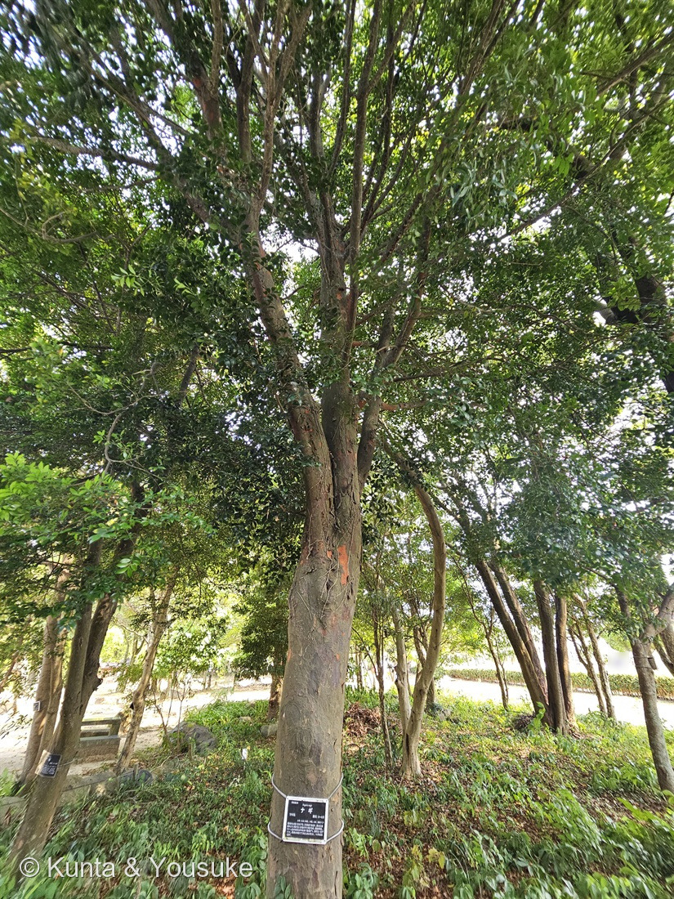
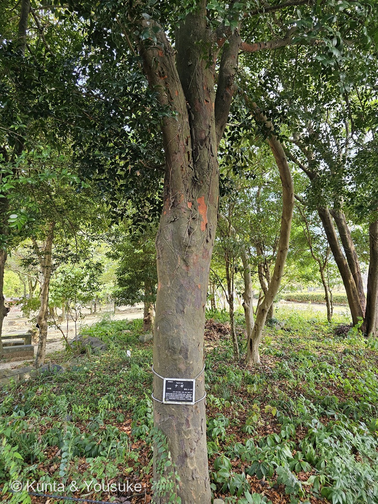
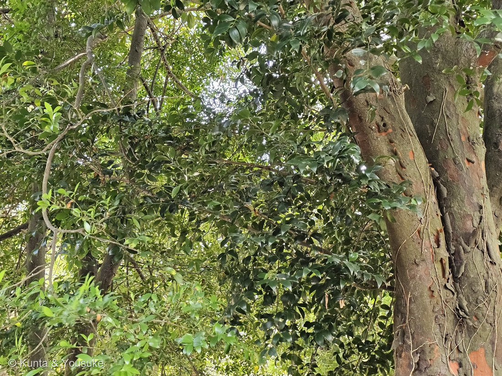
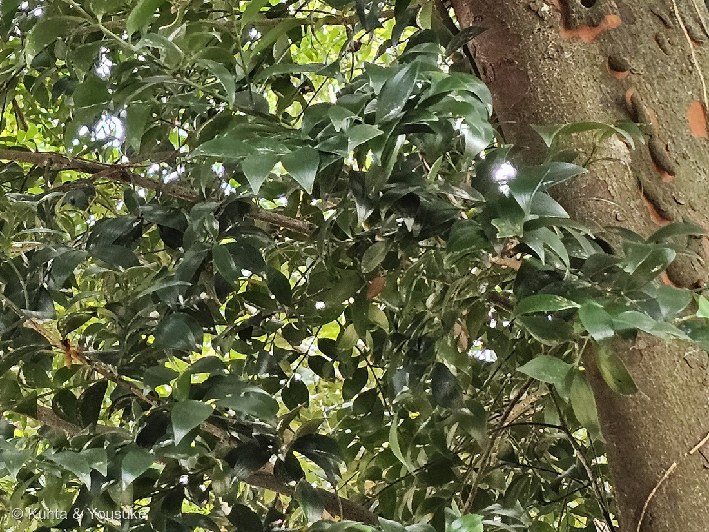

地図を読み込んでいるよ…
🔍 写真も地図も、押しているあいだ拡大して見られるよ（スマホは指を置いてすこし待ってね）。
🌍 の地図＝この子がもともと自生している場所を緑に。本州（紀伊半島・山口県・式根島）、四国（西南部）、九州（南部）、南西諸島、台湾、中国南部、海南島、ベトナム。くわしくは下の地図の説明を見てね。
⭐あたたかい海べりの、細長い分布だよ。植木ペディアは「本州の一部（紀伊半島、山口県等）、式根島、八丈島、四国西南部、九州南部及び沖縄など、海岸域に分布する」とし、三河の植物観察は「本州（紀伊半島、山口県）、四国、九州、式根島、沖縄、中国、台湾」とする。⚠⚠出典によって日本の範囲がずいぶんちがう＝園の名札はもっと狭く「日本（沖縄）、中国、台湾、東南アジア」だけを書いていた。⭐ここでは、いちばんくわしい植木ペディアと三河に合わせて塗ったよ。⚠式根島と八丈島（東京都）は塗っていない――地図は都道府県までしか塗れないので、東京都を緑にすると関東ぜんたいに生えているように見えてしまうから（253 ビロウの小笠原と同じ判断だよ）。⚠四国は「西南部」とあったので愛媛と高知に、九州は「南部」とあったので宮崎と鹿児島にしぼった＝三河は「四国、九州」とだけ書くので、そちらに従えばもっと広くなる。⭐ちがう読み方をしたので、正直に書いておくね。⭐⭐⭐そして、この地図でいちばん大事なのは「奈良県が緑じゃないこと」＝ナギでいちばん有名な森は奈良の春日山原始林だけれど、そこはこの木の自生地ではない。春日山原始林を未来へつなぐ会は「平安時代に春日大社に献木されたと記録されており」と書き、奈良県の保全計画は「ナギが春日山原始林の本来の構成樹種でない」という菅沼ら（1975）の指摘を引いている＝⭐1000年以上前に人が持ちこんだ木が、いまその森でふえすぎているんだ。⭐⭐神社でナギをよく見かけるのも同じ理由＝日本語版Wikipediaは「熊野信仰の広まりとともに、広く神社に植えられるようになったと考えられている」「古くから植栽されているため自然分布域外にも見られ」とする。⚠ぼくらが会ったのは長崎の動植物園に植えられた木＝長崎県は塗っていないので、この緑のすぐ外側だよ。⭐海外のぶん＝ベトナムは conifers.org が「Japan, China and Viet Nam」とし、海南島は日本語版Wikipediaが名指ししている。⚠中国の省は「中国南部」という言葉から広げたもので、出典が名指ししたわけではないよ。⚠朝鮮半島も日本語版Wikipediaは分布にあげているけれど、ほかの出典が書いていないので、ここでは塗っていない。⭐⭐同じマキ科の231 イヌマキは「本州（房総半島以西）、四国、九州、南西諸島、台湾、中国南部」で、こちらよりずっと広い＝⭐日本にいるマキ科の2種は、ふるさとの広さがずいぶんちがうんだね。
⚠ 地図は国（日本と中国だけ県・省）までしか塗れないから、ほんとうの分布より広く見えていることがあるよ。地図はだいたいの場所。正確なところは、上の文を見てね。
ナギ（梛）
Nageia nagi (Thunb.) Kuntze
別名 チカラシバ・ベンケイナカセ（弁慶泣かせ） ── ⭐どちらも「葉が横にちぎれない」ことから 原産 紀伊半島・山口県・式根島・四国西南部・九州南部・南西諸島・台湾・中国南部
マキ科 · Podocarpaceae（ナギ属 Nageia・ナンヨウスギ目 Araucariales）── ⭐図鑑で2人目のマキ科（231 イヌマキ）／⭐⭐⭐ナギ属ははじめて／⭐⭐10人目の裸子植物／⭐⭐⭐⭐231に書いた「マキ科は日本に2種だけ」の、その2人がこれでそろったよ／⚠科は増えないので101科のまま
燻太さんの問い「葉が厚くて、陰葉なのかなって疑問に思ったことぐらいかな。ナギってあんまり見かけない樹木だけど、極相の森林ならメジャーなのかな？」── ⭐⭐⭐⭐①は半分あたって半分ぎゃく、②は完全にぎゃくだった。そして二つの問いは、ひとつづきだったんだ
⭐⭐⭐ 名前と学名の由来 ── 属名も種小名も、日本語の「ナギ」
⭐⭐⭐⭐ この子の学名は、まるごと日本語でできている。
- ⭐⭐種小名 nagi＝conifers.org（The Gymnosperm Database）は「The epithet is Thunberg's Romanization of the Japanese common name」と書く＝⭐ツンベルクが、日本語の「ナギ」をそのままローマ字にしたもの。
- ⭐⭐⭐属名 Nageia も同じ＝これも和名「ナギ」をラテン語風にした名前で、1788年にヨーゼフ・ゲルトナーが立てた属だよ。
- ⚠だから「ナギ」という日本語の音が、属の名前と種の名前の両方になっている。⭐図鑑では、ちょっと他に見ない形だと思う。
- ⭐⭐⭐そして (Thunb.) はカール・ツンベルク――⭐⭐231 イヌマキ（Podocarpus macrophyllus (Thunb.) Sweet）と同じ人だよ。⭐マキ科の日本の2種は、どちらもツンベルクが名づけた（⚠231に書いたとおり、1775年に長崎の出島へ来た人）。
- ⭐そのあと現在の属に移したのが Kuntze（オットー・クンツェ・1891年）。⚠かつてはマキ属 Podocarpus に入れて Podocarpus nagi と呼ばれていた＝日本語版Wikipediaは「葉の形態や分子系統学的研究から別属とされるようになった」と書く。
⭐⭐⭐ そして和名の由来は、2つある。
- ⭐⭐⭐説①＝コナギに似ているから。日本語版Wikipediaは「葉の形がミズアオイ科のコナギ（古名はナギ）に似ているため」とする＝⚠⚠ここが大事＝先に草のナギ（いまのコナギ）があって、⭐木のほうがその名前をもらったということ。⭐だから「コナギ＝小さいナギ」ではなく、順番は逆なんだ（⭐おまけにしたよ）。
- ⭐⭐説②＝凪（なぎ）。植木ペディアは「ナギ＝凪（穏やかな海）」と読み、そこから「海運の安全や受験の合格を祈願する御神木として神社に植えられる」と書く。
- ⭐どちらが正しいかを、ぼくは決められなかった。⚠でも順番としては、①の「コナギに似た葉」が名前のもとで、②の「凪」はあとから重ねられた意味づけ、と読むのが自然だと思う――⚠これはぼくの読みで、そう書いた出典があるわけではないよ。
- ⭐⭐別名のチカラシバ・ベンケイナカセは、どちらも「葉が横にちぎれない」ことから（日本語版Wikipedia）。⭐弁慶でも引きちぎれない、ということだね。
⭐⭐ この植物のこと ── 針葉樹なのに、広い葉
⭐⭐⭐ 園の名札が、この子のいちばんの特徴を一文で言いきっている。――「針葉樹であるが、葉は広葉樹のように幅が広く多数の平行脈がある」。
- ⭐⭐⭐主脈（まん中の太い脈）が無い＝植木ペディアは「常緑樹の葉に見られるような主脈がなく、20〜30本の細い葉脈が縦に走っている」と書き、三河の植物観察も「主脈が見えず、細い平行脈が多数ある」とする。
- ⭐葉の大きさ＝「長さ4〜6㎝、幅1〜3㎝の楕円形」で「革質で厚い」（三河）。日本語版Wikipediaは「卵形から長楕円状披針形、2–9 × 0.7–3cm」「表面は深緑色で光沢があり、裏面はやや白色を帯びる」。
- ⭐⭐⭐つきかたが変わっている＝「葉は十字対生するが、葉柄がねじれて二列対生のように見える」（日本語版Wikipedia）。⭐写真④がまさにそれで、対になった葉が枝の左右に平たくならんでいるよ。
- ⭐⭐⭐⭐そして、この葉には有名な性質がある＝「葉は縦には容易に裂けるが、横にはなかなかちぎれない」（日本語版Wikipedia）。⚠植木ペディアは同じことを逆から書いていて「葉の繊維が強く、縦方向に引っ張っても裂けない」「葉は葉脈に従って裂けば簡単に裂ける」――⭐言い方はちがうけれど、意味は同じ＝⭐⭐葉脈に沿ってなら裂ける／葉脈を横切ってはちぎれない。
- ⭐⭐その「ちぎれなさ」が、そのまま縁結びになった＝「古くは鏡の裏に入れれば会いたい人に会えるという俗信」があり、「現代では結婚式場の装飾等に用いる」（植木ペディア）。
- ⭐⭐⭐マキ科は南半球の科――⭐そのことは231 イヌマキに書いたとおりで、日本にいるのはイヌマキとナギの2種だけ。⭐⭐⭐これで、その2人が図鑑にそろったよ。
- ⚠同じ科なのに、樹皮の剥がれ方は正反対＝イヌマキは「縦に裂けて薄く剥がれる」、ナギは「鱗状に剥がれ落ちる」。
⭐ 同定について ── 名札の一文が、そのまま決め手だった
⭐ 園の名札があるので、これは確認だよ。⚠でも樹木は厳しめに見る約束（087 ヤマモモ）だから、写真から言えることを、証拠の強い順にならべるね。
- ⭐⭐⭐いちばん強い＝園の名札（「常緑高木／Nageia nagi／ナギ／マキ科／開花：5〜6月」）。
- ⭐⭐⭐次に強い＝主脈の無い平行脈の、広い葉（写真④）。⭐針葉樹でこの葉を持つのは、ナギ属くらいしかいない。⭐名札じしんが「針葉樹であるが、葉は広葉樹のように幅が広く多数の平行脈がある」と書いていて、これが決め手の一文になっている。
- ⭐⭐その次＝対生で、枝の左右に2列にならぶ（写真④）＝「葉は十字対生するが、葉柄がねじれて二列対生のように見える」（日本語版Wikipedia）。⭐⭐同じマキ科の231 イヌマキはらせん状なので、ここで完全に分かれるよ。
- ⭐そして＝鱗片状に剥がれてオレンジ色の斑になる樹皮（写真②）。
- ⚠落としきれない相手＝ナギ属のほかの種（Nageia は世界に5〜7種）。⭐ただし日本で見られるナギ属はこの1種だけなので、実際にはほぼ問題にならない。
- ⚠⚠そして、この写真では雌雄が決められない＝雌雄異株なのに、花も実も写っていないから。⏳宿題にしたよ。
⭐⭐⭐ 燻太さんの見つけた「赤い箇所」── 樹皮
⭐⭐⭐⭐ 燻太さんが現場で気づいたのは、「樹皮が赤い箇所があること」だった。――⭐⭐これは、出典4つがそろって書いていることだよ。
- ⭐⭐⭐植木ペディア＝「樹皮は滑らかで灰褐色だが、樹齢を重ねると鱗状に剥がれ落ち、オレンジ色を含む斑模様になる」。
- ⭐⭐日本語版Wikipedia＝「平滑で黒褐色から灰褐色、あるいは紫褐色で、鱗片状に浅く剥がれてその跡は紅黄色になる」。
- ⭐三河の植物観察＝「幹は赤褐色、樹皮が大きく剥がれ落ちる」。
- ⭐conifers.org＝「Bark brown-violet, irregularly flaky」（＝紫褐色で、不規則に薄片状に剥がれる）。
- ⭐⭐⭐⭐ここでいちばん大事なのは、植木ペディアの「樹齢を重ねると」の5文字＝⭐若い木の樹皮はなめらかな灰褐色のままで、この斑模様は年をとった木にしか出ない――⭐⭐つまり燻太さんが見つけた赤は、この木がそれなりに長く生きてきた証拠でもあるんだ。
- ⭐写真③には、幹に横向きの細い筋もいくつか写っている＝conifers.org は「lenticels grayish brown, longitudinally sparsely arranged」（灰褐色の皮目がまばらに縦にならぶ）と書く＝⭐皮目（ひもく）＝木が息をするための小さな穴だよ。
- ⚠⚠087 ヤマモモで「樹皮はたいてい決め手にならない」と決めたけれど、この子はその例外（255 カリン・257 シマサルスベリにつづいて3人目）。⭐剥がれ方と、剥がれた跡の色が、はっきりしているから。
⭐⭐⭐⭐ 燻太さんの問い① ──「葉が厚くて、陰葉なのかな？」
⭐⭐⭐ これは、2つに割って答えるのがいいと思う。――半分は当たっていて、半分は逆だったよ。
⭐⭐⭐ まず、当たっていたほう ──「暗いところで生きる木」。
- ⭐⭐植木ペディア＝「日向を好むが耐陰性はかなり高く、半日陰でも育つ」。
- ⭐⭐⭐conifers.org＝「shade-tolerant tree when young, but when mature, may become a canopy dominant」＝⭐「若いうちは日かげに耐え、大きくなると林冠の主役になることがある」――⭐⭐これは森の木としてはとても強い生き方だよ（暗い林床でじっと待って、上が空いたら伸びる）。
- ⭐⭐春日山原始林を未来へつなぐ会も、この木の性質として「暗い場所でも成長することができる」をあげている。
- ⭐⭐⭐だから「暗いところで暮らす木なのかな」という燻太さんの見立ては、そのとおり。⭐そして、この耐陰性が、下の問い②の答えにまっすぐつながっていくんだ。
⚠⚠ つぎに、逆だったほう ── 厚さは、むしろ「陽葉」のしるし。
- ⚠⚠⚠「陽葉・陰葉」という言葉で言うと、厚いほうが陽葉なんだ。――寺島一郎さん（東京大学大学院理学系研究科）は、日本植物生理学会「みんなのひろば」でこう答えている＝「陽葉の方が陰葉よりも厚いことが知られています。柵状組織が厚くなることで葉が厚くなります」。
- ⭐そして陰葉のほうは面積が大きくなる＝「弱い光でも広い面積で受けることでかなりの光合成生産を行うことができます」（同）。⭐薄く広く、が陰葉の作戦だよ。
- ⚠だから「厚い＝陰葉」ではなくて、⭐同じ木の中で日なたの葉と日かげの葉をくらべたら、日なたのほうが厚い、というのが陽葉・陰葉の話なんだ。
- ⭐⭐じゃあ、なぜナギの葉は厚いのか。――⭐それは陽葉か陰葉かではなく、常緑で、葉を何年も使う木だからだと思う。⭐照葉樹の葉が厚くて光るのは、表面のクチクラ層（ろうの層）が発達しているからで、これは水の蒸発や、寒さ・強い日ざしから葉を守るもの。⭐三河が「革質で厚い」と書き、Wikipediaが「表面は深緑色で光沢があり」と書くのは、まさにその質感だよ。
- ⚠⚠ただし「ナギの葉がなぜ厚いのか」をはっきり書いた出典は、ぼくは見つけられなかった。⭐だから上の行は、常緑樹ぜんぱんの話をこの子に当てはめたものだと思って読んでね。
⭐ さいごに、写真から言えたこと／言えなかったこと。
- ⭐写真③④の葉はとても濃い緑で、写真①の樹冠の上のほうの葉はもっと明るい黄緑に見える。
- ⚠⚠でも、これを「陰葉と陽葉のちがい」とは言えない＝⭐単に、上のほうに日が当たっていて、下のほうが日かげだったから、というだけかもしれないから。⭐厚さを見くらべたわけでもないしね。
- ⏳確かめる方法はある＝⭐同じ木の日なたの落ち葉と日かげの落ち葉を拾って、ならべて厚さを見ること（⚠園の木なのでちぎらず、落ちているものを見るだけ）。⭐宿題にしておくね。
⭐⭐⭐⭐⭐ 燻太さんの問い② ──「極相の森林ならメジャーなのかな？」
⭐⭐⭐⭐ これは、ぼくが調べたなかでいちばん驚いた答えになった。――⭐⭐ぎゃくだったんだ。
⭐⭐ まず、「あんまり見かけない」のほうは正しい。
- ⭐自然に生えている場所は、かなり限られている＝植木ペディアは「本州の一部（紀伊半島、山口県等）、式根島、八丈島、四国西南部、九州南部及び沖縄など、海岸域に分布する」とする。
- ⭐三河の植物観察は「本州（紀伊半島、山口県）、四国、九州、式根島、沖縄、中国、台湾」。⚠園の名札はもっと狭く「分布：日本（沖縄）、中国、台湾、東南アジア」だけを書いていた＝⭐出典によって、日本の範囲の読み方がずいぶんちがうよ。
- ⭐⭐そして、神社でよく見かけるのは自然に生えたからではない＝日本語版Wikipediaは「この熊野新宮で御神木として扱われたため、熊野信仰の広まりとともに、広く神社に植えられるようになったと考えられている」と書き、「古くから植栽されているため自然分布域外にも見られ」とする。
⭐⭐⭐⭐⭐ そして、「極相林ならメジャー」のほうは、逆だった。
- ⭐⭐⭐いちばんナギが有名な森は、奈良の春日山原始林（特別天然記念物）。⚠⚠でも、そこはナギの自生地ではない。
- ⭐⭐⭐奈良県『春日山原始林保全計画（素案）』（平成27年6月版）は、保全上の課題を6つあげていて、その5つめが「ナギの生育範囲の拡大」なんだ（⭐あとの5つは、後継樹の更新不良／階層構造の単純化／下層植生の衰退／ナンキンハゼの侵入／ナラ枯れ被害の拡大）。
- ⭐⭐⭐⭐その本文はこう書く＝「菅沼ら（昭和50年（1975））は、ナギが春日山原始林の本来の構成樹種でないとすると、原始林内に自然に侵入したとはいってもそこで生育することは問題であると指摘している」「ナギは春日大社の催事に用いられるなど、地域の歴史文化との関わりが深い樹木であることから、その取り扱いについては十分注意が必要であるが、その生息範囲を拡げていることから春日山原始林に影響を与えていると言える」。
- ⭐⭐⭐⭐⭐ここが、燻太さんの問いへのまっすぐな答え＝同じ資料が引く『名勝奈良公園保存管理・活用計画』は、めざす姿をこう書いている＝「台風による倒木跡地や枯損木跡地等の風穴を防ぎ、自然な状態で極相林であるコジイ林への遷移を誘導する」「ナギ、ナンキンハゼ等の侵入種の分布拡大による、原始林の種組成の変化、多様性の劣化を防ぐために、適切な除伐等の保全管理を行う」。
- ⭐⭐⭐⭐つまり――あの森の極相はコジイ（ツブラジイ）の林であって、ナギではない。⭐⭐ナギはむしろ、その極相林への道をふさいでいる側として書かれているんだ。
- ⭐⭐春日山原始林を未来へつなぐ会は、ナギがそこにいる理由を「平安時代に春日大社に献木されたと記録されており」と説明する＝⭐1000年以上前に、人が持ちこんだ木。⭐「大正12年（1923年）に国の天然記念物に指定されている」のも、そのナギ林だよ。
⭐⭐⭐ なぜ、そんなに強いのか ── 3つそろっている。
- ⭐⭐①暗いところで育つ（＝上の問い①の答え）。つなぐ会は「暗い場所でも成長することができる」をあげている。
- ⭐⭐②シカが食べない＝つなぐ会「シカが食べないことなどから、生育範囲が拡大傾向にある」。⭐まわりの下草が食べつくされるほど、ナギだけが残っていく。
- ⭐⭐⭐⭐③まわりの植物の生長をじゃまする物質を出す＝日本語版Wikipedia「ナギは葉、種子、根などにアレロパシー物質であるナギラクトン (nagilactone) をもつことが知られており、他の植物の発芽や生長を抑制する」。⭐⭐つなぐ会も「周りに別の植物が育ちにくくする効果（アレロパシー）をもっている」と書く。⭐物質の名前が、そのまま「ナギのラクトン」なんだ。
- ⭐⭐⭐この3つがそろうと、暗くても育ち・食べられず・まわりを育たなくする木になる＝⭐これが、春日山でナギだけの林ができた理由だと考えられている。
- ⭐⭐そして、これは最近わかった話ではない＝奈良県の資料の年表には、昭和16年（1941）に「ナギの繁殖対策で、文部省史蹟名勝天然記念物調査会臨時委員本田京大助教授が現地調査を行った」とある＝⭐85年前から、人はこのことに気づいていたんだね。
- ⚠⚠ひとつ、ぼくには分からなかったことがある。――奈良県の資料は「風散布によりその生息範囲を拡大するナギが」と書いている。⚠でも、この子の種子は直径1〜1.5cmもあって、植木ペディアは「雌の木の下には小さなナギの木がたくさん育つ」と書く＝⭐ぼくには、それがどうして風で散るのか分からなかった。⭐そのまま正直に書いておくね。
⭐⭐ 神さまの木 ── 熊野と、春日
- ⭐⭐⭐熊野では、ナギは神木＝日本語版Wikipedia「熊野権現においてナギは神木とされ、熊野神社ではナギを玉串とし、ナギの葉の上に供物をのせる」。
- ⭐⭐『保元物語』には「信者がナギの葉をかざして熊野詣をすることが記されている」（同）＝⭐平安の終わりごろの本だよ。
- ⭐⭐⭐春日大社では、サカキではなくナギを使う＝「神事にサカキ（榊）ではなく、このナギを使う」（同）。
- ⭐国の天然記念物になっているナギが、4つある＝山口県「小郡町ナギ自生地北限地帯」／奈良県「春日神社境内ナギ樹林」／和歌山県「熊野速玉神社のナギ」／愛知県「牛久保のナギ」（同）。⚠⚠そのうち「自生地」と名のついているのは、山口のものだけだよ。
- ⭐種子には油があって、「かつては神社の石灯篭等の燃料用に使われた」（植木ペディア）＝⭐灯りにもなっていたんだね。
- ⭐⭐⭐そして、ここがこの木のいちばんふしぎなところだと思う。――⭐人が「守りたい」と思って千年かけて広げた木が、いま「侵入種」と呼ばれている。⚠でも奈良県の資料も、責める書き方はしていない＝「その取り扱いについては十分注意が必要」という一文で、ちゃんと立ち止まっているよ。
⭐ 会えた場所 ── 樹木園の、イジュの10秒あと
- ⭐九十九島動植物園 森きらら（長崎県佐世保市）の樹木園。⭐⭐この一角は、いま図鑑の宝の山になっていて、241 クヌギ・245 イジュ・247 センペルセコイア・248 メタセコイア・255 カリンが、みんなここで撮られている。
- ⚠⚠⚠あぶなかったこと＝この子の写真の10秒まえ（13:58:29）のコマは、245 イジュの枝と葉だった――⭐⭐そのまま「連写だから同じ木」と思って使っていたら、イジュの葉をナギの葉として載せるところだった。⭐248 メタセコイアで覚えたこと（連写のかたまり＝同じ個体とはかぎらない）が、そのまま効いたよ。
- ⭐見分けかたは、はっきりしていた＝イジュの葉は枝先に集まって互生し、ナギの葉は枝の左右に2列で対生する＝⭐同じ1本の木が、両方を持つことはありえないからね。
- ⭐この子の写真の40秒あと（13:59:30）には、となりのタブノキの名札を撮っている。⚠タブノキはまだ図鑑にいない（087 ヤマモモや143 シャリンバイで「落とせなかった相手」として名前だけ出てきた木だよ）。⏳次に登録できる子かもしれないね。
出典：九十九島動植物園 森きららの園名札（「常緑高木／Nageia nagi／ナギ／マキ科／開花：5〜6月／分布：日本（沖縄）、中国、台湾、東南アジア」＋本文「暖地の山地に自生する。針葉樹であるが、葉は広葉樹のように幅が広く多数の平行脈がある。雌雄異株。クリーム色の雄花は円柱形で数個ずつ、雌花は1個ずつつく。果実は球形でできはじめは青白く、10月頃黒く熟す。」。⚠名札のアップは公開していないよ）／日本語版Wikipedia「ナギ」（学名と命名者・マキ属から別属になった経緯／和名の由来＝コナギ（古名ナギ）に葉が似ること・別名チカラシバ／ベンケイナカセ／分布と「古くから植栽されているため自然分布域外にも見られ」／葉は十字対生するが葉柄がねじれて二列対生のように見えること・葉身2–9×0.7–3cm・表面は深緑色で光沢・裏面はやや白色／葉は縦には容易に裂けるが横にはなかなかちぎれないこと／樹皮は鱗片状に浅く剥がれてその跡は紅黄色になること／雌雄異株・花期3–6月／ナギラクトンとアレロパシー／熊野権現の神木・玉串・『保元物語』の熊野詣／春日大社が神事にサカキでなくナギを使うこと／国の天然記念物4件／常緑広葉樹林に生育し肥沃で深い土壌を好むこと）／三河の植物観察「ナギ」（分布＝本州（紀伊半島、山口県）、四国、九州、式根島、沖縄、中国、台湾／高さ10〜20m／葉は対生・革質で厚い・主脈が見えず細い平行脈が多数あること・長さ4〜6cm、幅1〜3cm／幹は赤褐色、樹皮が大きく剥がれ落ちること／雌雄異株・花期5〜6月／種子は直径1〜1.5cmで緑色に粉白色を帯び10〜11月に褐色に熟すこと）／庭木図鑑 植木ペディア「ナギ」（ナギ＝凪の読みと、海運の安全・合格祈願の御神木／主脈がなく20〜30本の細い葉脈が縦に走ること／葉脈に従って裂けば簡単に裂けることと縁結び・鏡の裏の俗信／樹皮は樹齢を重ねると鱗状に剥がれ落ちオレンジ色を含む斑模様になること／分布＝本州の一部・式根島・八丈島・四国西南部・九州南部及び沖縄などの海岸域／雌雄異株／日向を好むが耐陰性はかなり高く半日陰でも育つこと／発芽率が高く雌の木の下に小さなナギがたくさん育つこと／種子の油が石灯篭の燃料に使われたこと）／conifers.org（The Gymnosperm Database）"Nageia nagi"（種小名はツンベルクによる和名のローマ字表記であること／shade-tolerant tree when young, but when mature, may become a canopy dominant／葉は opposite, coriaceous or thick chartaceous で numerous, parallel nerves を持つこと／Bark brown-violet, irregularly flaky・lenticels grayish brown, longitudinally sparsely arranged／樹高20〜30m）／日本植物生理学会「みんなのひろば」植物Q&A「陰葉と陽葉の大きさ」（回答＝寺島一郎・東京大学大学院理学系研究科）（陽葉の方が陰葉よりも厚いこと・柵状組織が厚くなること／陰葉は面積が大きく、弱い光でも広い面積で受けて光合成すること）／奈良県『春日山原始林保全計画（素案）』平成27年6月版（保全上の6つの課題とその5つめ「ナギの生育範囲の拡大」／菅沼ら（1975）の指摘／「その取り扱いについては十分注意が必要」の一文／『名勝奈良公園保存管理・活用計画』の「極相林であるコジイ林への遷移を誘導する」と「ナギ、ナンキンハゼ等の侵入種」／昭和16年（1941）のナギの繁殖対策の現地調査／⚠「風散布により」の記述）／春日山原始林を未来へつなぐ会「いま、春日山原始林で起きていること」（平安時代に春日大社へ献木されたと記録されていること／大正12年（1923年）に国の天然記念物に指定されたこと／シカが食べないこと・暗い場所でも成長できること・アレロパシー）